96: FAIL · 128: PASS · 256: PASS60 m/tile · 1.90 s96: FAIL · 128: PASS · 256: PASS60 m/tile · 1.90 s
96: FAIL · 128: PASS · 256: PASS60 m/tile · 1.90 s96: FAIL · 128: PASS · 256: PASS60 m/tile · 1.90 s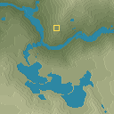
96: PASS · 128: PASS · 256: PASS60 m/tile · 1.14 s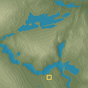
96: FAIL · 128: FAIL · 256: FAIL60 m/tile · 3.05 s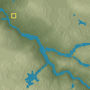
96: PASS · 128: PASS · 256: PASS60 m/tile · 0.89 s 96: FAIL · 128: FAIL · 256: FAIL120 m/tile · 3.72 s
96: FAIL · 128: FAIL · 256: FAIL120 m/tile · 3.72 s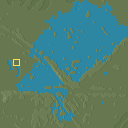
96: FAIL · 128: PASS · 256: FAIL60 m/tile · 1.87 s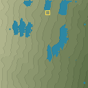
96: FAIL · 128: FAIL · 256: FAIL60 m/tile · 1.40 s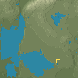
96: FAIL · 128: PASS · 256: FAIL60 m/tile · 2.87 s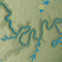
96: FAIL · 128: PASS · 256: FAIL60 m/tile · 1.74 s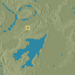
96: FAIL · 128: FAIL · 256: FAIL60 m/tile · 5.40 s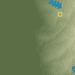
96: FAIL · 128: PASS · 256: FAIL60 m/tile · 1.42 s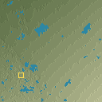
96: FAIL · 128: FAIL · 256: FAIL60 m/tile · 4.53 s 96: PASS · 128: FAIL · 256: PASS60 m/tile · 1.84 s
96: PASS · 128: FAIL · 256: PASS60 m/tile · 1.84 s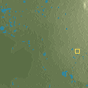
96: FAIL · 128: FAIL · 256: PASS60 m/tile · 1.78 s 96: FAIL · 128: FAIL · 256: FAIL60 m/tile · 2.85 s
96: FAIL · 128: FAIL · 256: FAIL60 m/tile · 2.85 s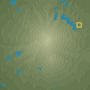
96: FAIL · 128: FAIL · 256: PASS60 m/tile · 0.99 s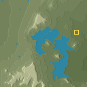
96: FAIL · 128: PASS · 256: PASS60 m/tile · 1.39 s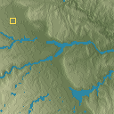
96: FAIL · 128: PASS · 256: FAIL60 m/tile · 0.75 s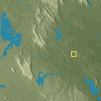
96: FAIL · 128: FAIL · 256: FAIL60 m/tile · 4.62 s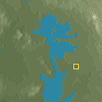
96: PASS · 128: FAIL · 256: PASS60 m/tile · 4.41 s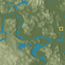
96: FAIL · 128: PASS · 256: PASS60 m/tile · 1.12 s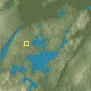
96: FAIL · 128: FAIL · 256: FAIL60 m/tile · 3.31 s 96: FAIL · 128: FAIL · 256: PASS60 m/tile · 2.10 s
96: FAIL · 128: FAIL · 256: PASS60 m/tile · 2.10 s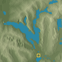
96: FAIL · 128: PASS · 256: PASS120 m/tile · 2.07 s 96: FAIL · 128: FAIL · 256: PASS120 m/tile · 2.81 s
96: FAIL · 128: FAIL · 256: PASS120 m/tile · 2.81 s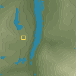
96: FAIL · 128: FAIL · 256: PASS60 m/tile · 1.49 s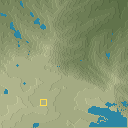
96: PASS · 128: FAIL · 256: PASS60 m/tile · 2.75 s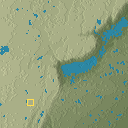
96: FAIL · 128: FAIL · 256: FAIL60 m/tile · 4.27 s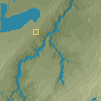
96: PASS · 128: PASS · 256: PASS60 m/tile · 1.35 s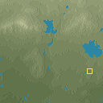
96: FAIL · 128: FAIL · 256: FAIL60 m/tile · 3.66 s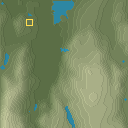
96: FAIL · 128: FAIL · 256: PASS60 m/tile · 3.91 s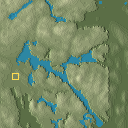
96: PASS · 128: FAIL · 256: FAIL60 m/tile · 3.64 s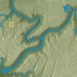
96: FAIL · 128: PASS · 256: PASS60 m/tile · 1.45 s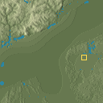
96: FAIL · 128: FAIL · 256: FAIL60 m/tile · 3.67 s 96: PASS · 128: PASS · 256: FAIL60 m/tile · 1.72 s
96: PASS · 128: PASS · 256: FAIL60 m/tile · 1.72 s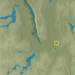
96: FAIL · 128: PASS · 256: FAIL60 m/tile · 1.07 s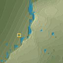
96: FAIL · 128: FAIL · 256: PASS30 m/tile · 3.52 s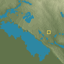
96: FAIL · 128: FAIL · 256: FAIL60 m/tile · 4.05 s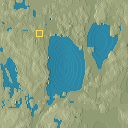
96: FAIL · 128: FAIL · 256: FAIL120 m/tile · 4.61 s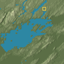
96: FAIL · 128: PASS · 256: PASS60 m/tile · 2.49 s 96: FAIL · 128: FAIL · 256: PASS60 m/tile · 1.66 s
96: FAIL · 128: FAIL · 256: PASS60 m/tile · 1.66 s 96: FAIL · 128: FAIL · 256: FAIL60 m/tile · 0.57 s
96: FAIL · 128: FAIL · 256: FAIL60 m/tile · 0.57 s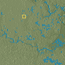
96: FAIL · 128: FAIL · 256: FAIL120 m/tile · 3.71 s 96: PASS · 128: FAIL · 256: FAIL60 m/tile · 2.97 s
96: PASS · 128: FAIL · 256: FAIL60 m/tile · 2.97 s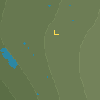
96: FAIL · 128: FAIL · 256: FAIL30 m/tile · 2.21 s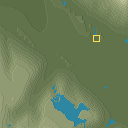
96: FAIL · 128: FAIL · 256: FAIL60 m/tile · 6.39 s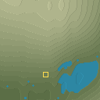
96: FAIL · 128: FAIL · 256: FAIL60 m/tile · 1.54 s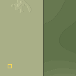
96: FAIL · 128: FAIL · 256: FAIL120 m/tile · 0.58 s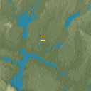
96: PASS · 128: PASS · 256: FAIL60 m/tile · 3.60 s